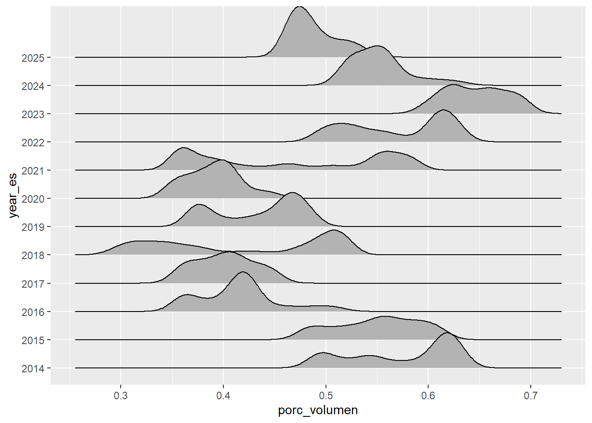
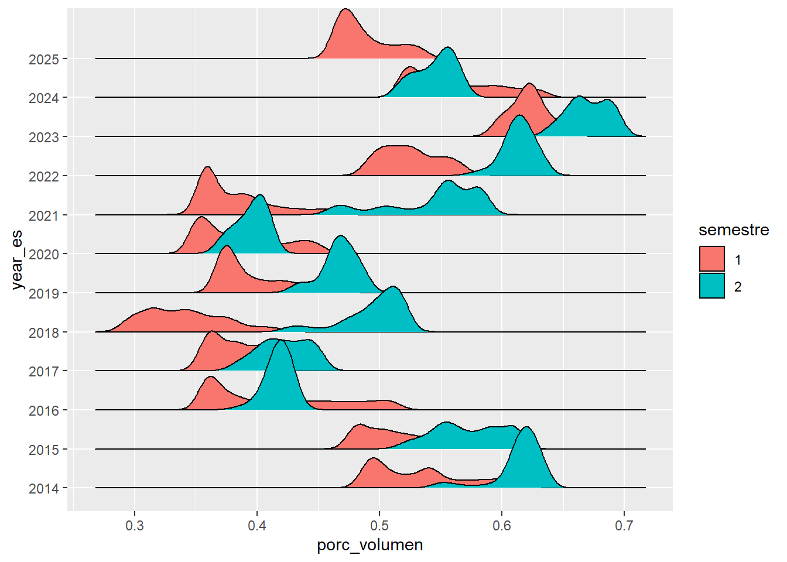
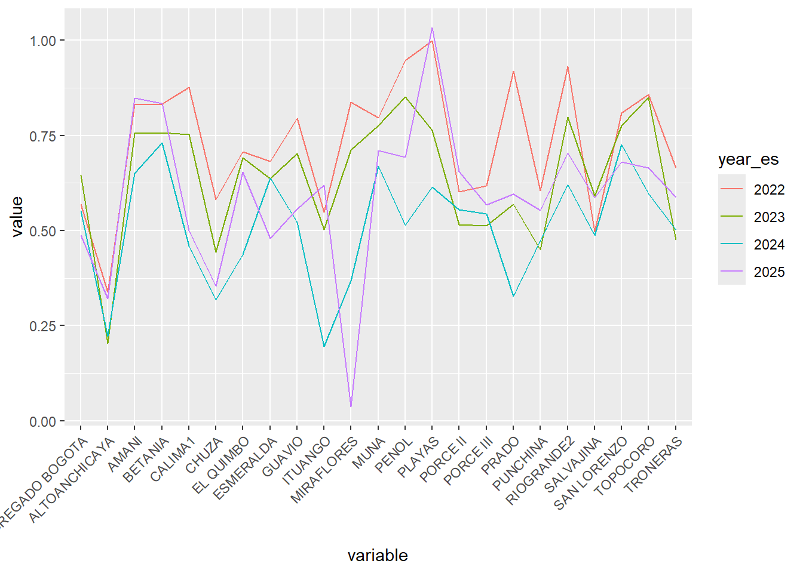
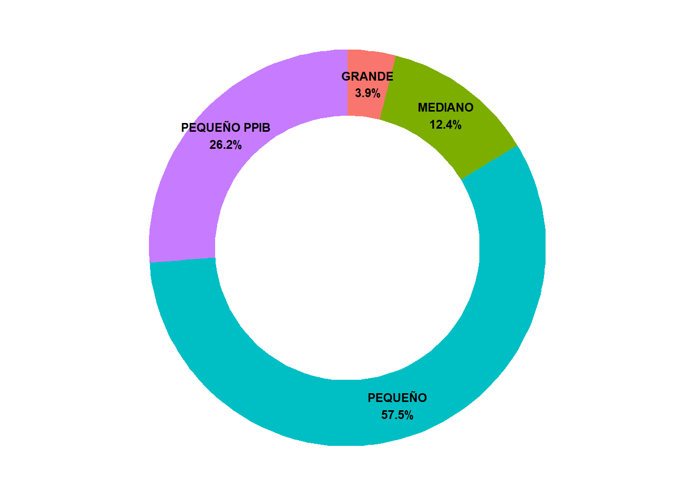
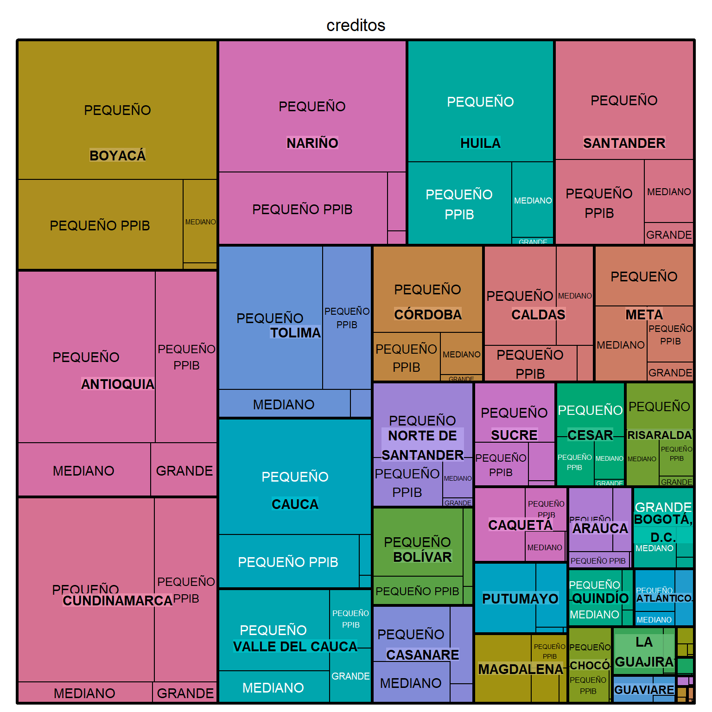
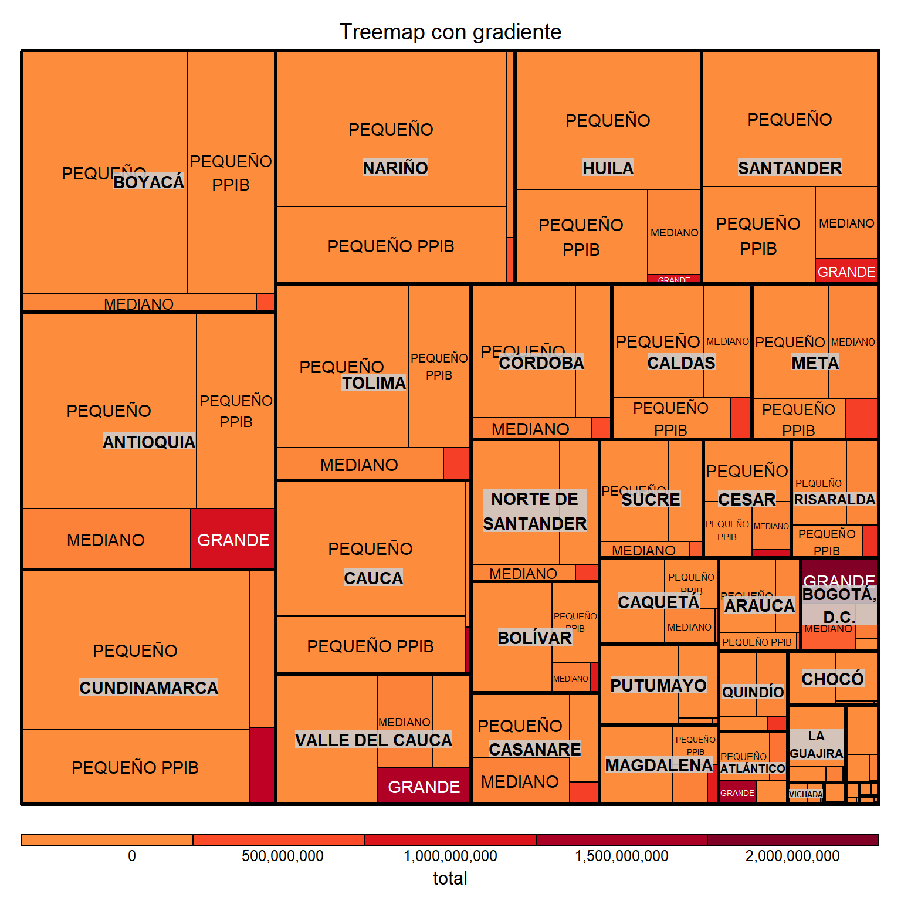
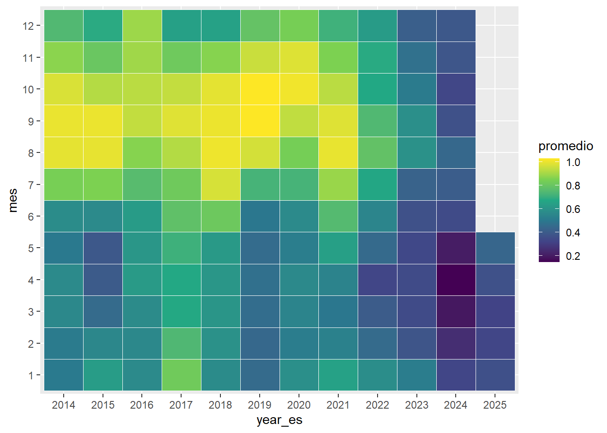
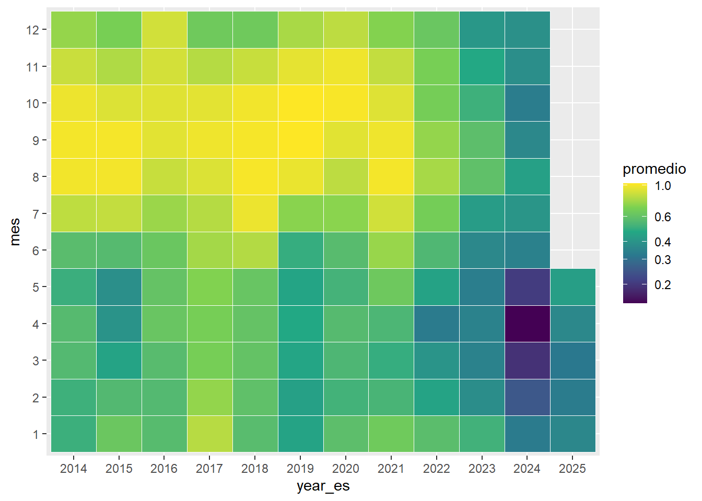

Code
library(tidyverse)
library(janitor)
library(readxl)
library(plotly) # Visualización interactivaEstadística
library(tidyverse)
library(janitor)
library(readxl)
library(plotly) # Visualización interactivadf_embalses <- read_csv("datos/PorcVoluUtilDiar.csv") |>
rename(id = Id,
embalse = Name,
porc_volumen = Value,
fecha = Date) |>
mutate(year_es = year(fecha),
mes = month(fecha),
trimestre = quarter(fecha),
semestre = semester(fecha))
df_embalses |> head()df_evas <- read_excel("datos/Base agrícola 2019 - 2023.xlsx", skip = 6) |>
clean_names()
df_evas |> head()df_creditos <- read_csv("datos/Colocaciones_de_Cr_dito_Sector_Agropecuario_-_2021-_2024_20250502.csv") |>
clean_names()
df_creditos |> head()library(ggridges)
df_embalses |>
filter(embalse == "AGREGADO BOGOTA") |>
mutate(year_es = as.factor(year_es),
semestre = as.factor(semestre)) |>
ggplot(aes(x = porc_volumen, y = year_es)) +
geom_density_ridges()
df_embalses |>
filter(embalse == "AGREGADO BOGOTA") |>
mutate(year_es = as.factor(year_es),
semestre = as.factor(semestre)) |>
ggplot(aes(x = porc_volumen, y = year_es, fill = semestre)) +
geom_density_ridges()
library(GGally)
df_embalses_resumen <-
df_embalses |>
group_by(embalse, year_es) |>
reframe(promedio = mean(porc_volumen, na.rm = TRUE)) |>
pivot_wider(names_from = embalse,
values_from = promedio) |>
mutate(year_es = as.factor(year_es))
grafico_coordenadas <-
ggparcoord(
columns = 2:24, # variables numéricas
groupColumn = 1, # variable categórica
scale = "globalminmax", # Mantener las unidades originales
data = df_embalses_resumen
) +
theme(axis.text.x = element_text(angle = 45, hjust = 1))
grafico_coordenadas
ggplotly(grafico_coordenadas)resumen_creditos <-
df_creditos |>
count(tipo_productor) |>
mutate(porcentaje = (n / sum(n)) * 100)
resumen_creditos$ymax <- cumsum(resumen_creditos$porcentaje)
resumen_creditos$ymin <- c(0, resumen_creditos$ymax[1:3])
# Agregar etiquetas con porcentajes
resumen_creditos <- resumen_creditos |>
mutate(
pos = (ymax + ymin) / 2, # posición del texto
etiqueta = paste0(tipo_productor, "\n", round(porcentaje, 1), "%")
)
resumen_creditos |>
ggplot(aes(
ymax = ymax,
ymin = ymin,
xmax = 4,
xmin = 3,
fill = tipo_productor
)) +
geom_rect() +
geom_text(aes(x = 3.5, y = pos, label = etiqueta),
size = 3,
fontface = "bold") +
coord_polar(theta = "y") +
xlim(c(1, 4)) +
theme_void() +
theme(legend.position = "none")
library(treemap)
resumen_creditos2 <-
df_creditos |>
group_by(departamento_inversion, tipo_productor) |>
reframe(creditos = n(),
total = mean(colocacion, na.rm = TRUE))
treemap(
dtf = resumen_creditos2,
index = c("departamento_inversion", "tipo_productor"),
vSize = "creditos",
type = "index"
)
treemap(
dtf = resumen_creditos2,
index = c("departamento_inversion", "tipo_productor"),
vSize = "creditos",
vColor = "total",
type = "value",
palette = "YlOrRd",
title = "Treemap con gradiente",
format.legend = list(scientific = FALSE, big.mark = ","),
n = 5
)
df_embalses |>
filter(embalse == "CHUZA") |>
group_by(year_es, mes) |>
reframe(promedio = mean(porc_volumen, na.rm = TRUE)) |>
mutate(year_es = as.factor(year_es),
mes = as.factor(mes)) |>
ggplot(aes(x = year_es, y = mes, fill = promedio)) +
geom_tile(color = "white") +
scale_fill_viridis_c()
library(scales)
df_embalses |>
filter(embalse == "CHUZA") |>
group_by(year_es, mes) |>
reframe(promedio = mean(porc_volumen, na.rm = TRUE)) |>
mutate(year_es = as.factor(year_es), mes = as.factor(mes)) |>
ggplot(aes(x = year_es, y = mes, fill = promedio)) +
geom_tile(color = "white") +
scale_fill_viridis_c(trans = "log10",
breaks = trans_breaks(
trans = "log10",
inv = function(x)
round(10^x, digits = 1)
))